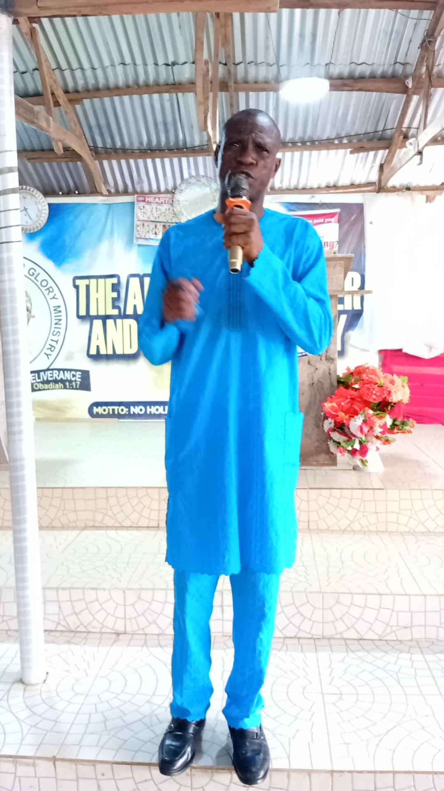

Our General Overseer leading with fervent prayer, powerful teaching, and Christ-centred compassion.
Send a Prayer RequestApostle Adeleke Olukayode Elijah is a passionate minister of the Gospel who has dedicated his life to raising believers and restoring lives through the power of God. He carries a bold apostolic mandate to reveal Jesus Christ in power and glory and to shepherd the church in faith, healing, and deliverance.
Under his leadership, The Apostolic Power and Glory Ministry has grown into a place of spiritual renewal, life transformation, and supernatural demonstration of God's love. His ministry is marked by a prophetic voice, practical discipleship, and a deep commitment to the Word of God.
To empower every believer to experience the presence of God, to walk in victory, and to carry the Gospel boldly into every sphere of life. Apostle Elijah believes that every service, every prayer, and every teaching is an opportunity to encounter the Lord and receive God's healing, restoration, and provision.
We believe in the authority of Scripture, the power of prayer, the gifts of the Holy Spirit, and the mandate of the Great Commission. Apostle Elijah teaches that faith in Jesus Christ brings freedom, healing, and a new beginning for every believer.
Join us for worship, study, and service as we press into God together and grow in grace, truth, and spiritual power.